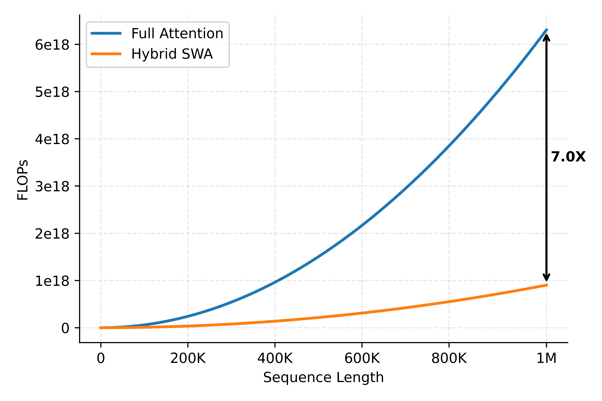
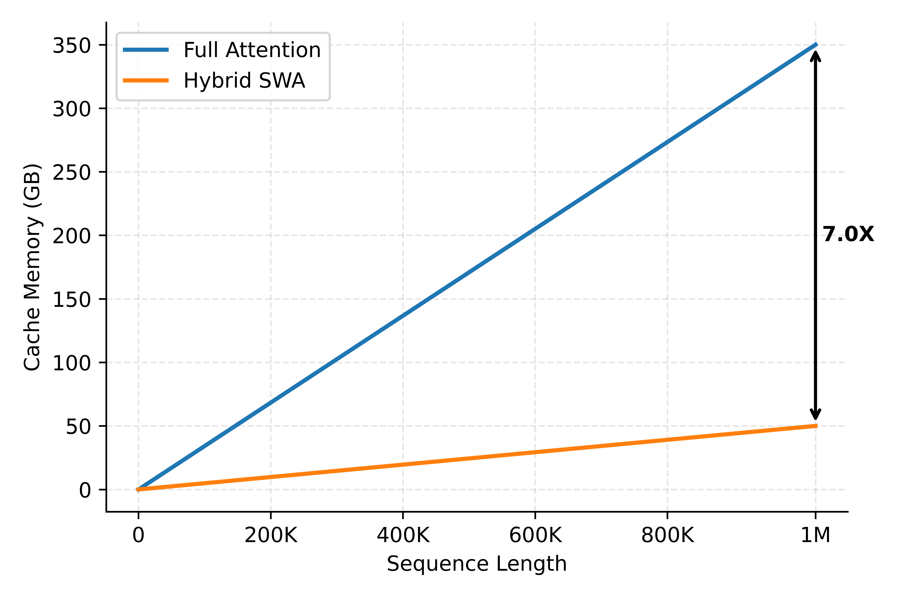
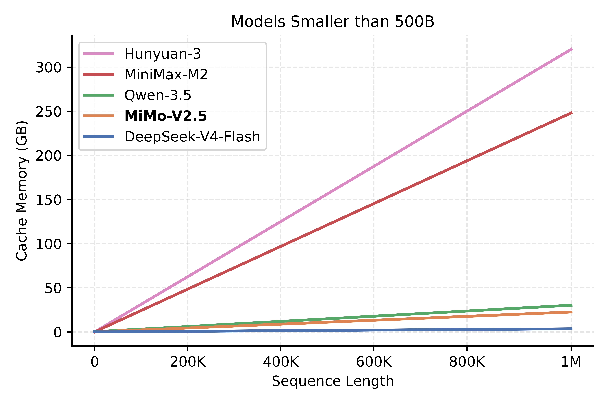
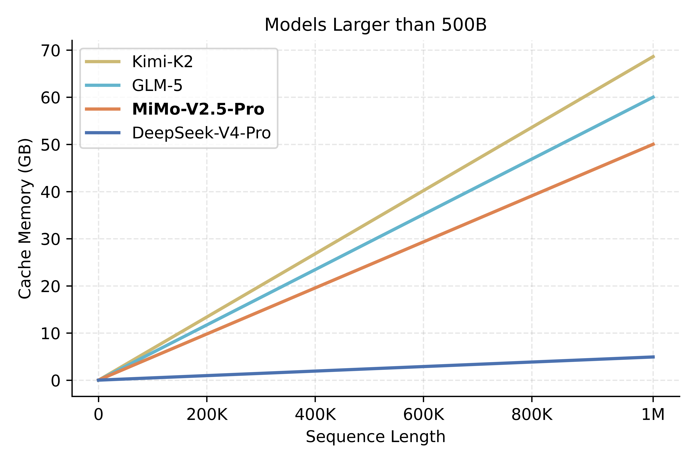
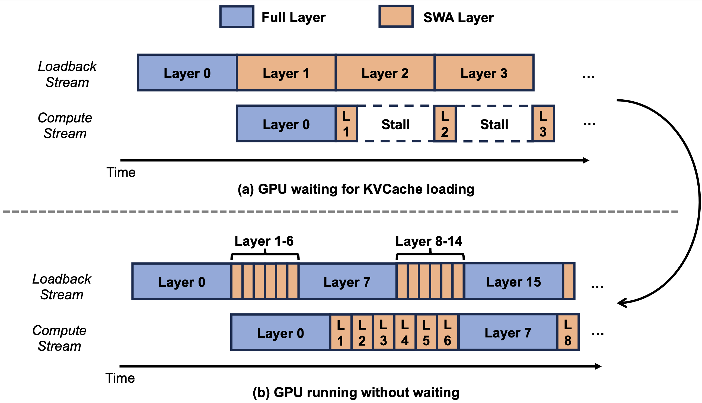
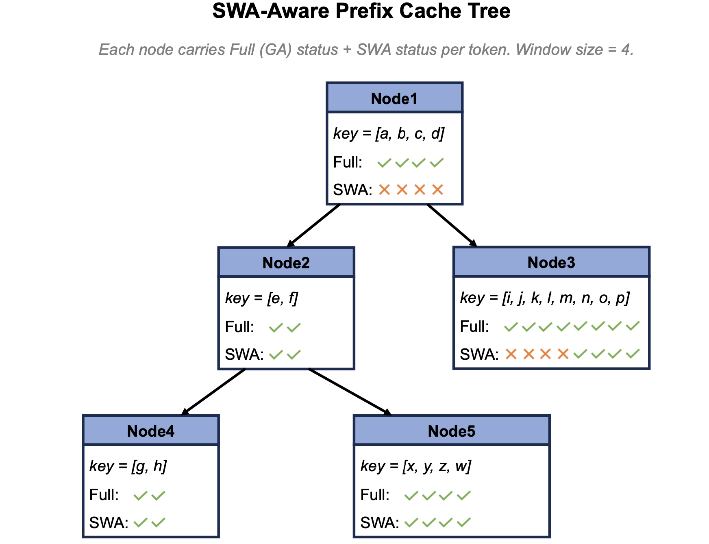
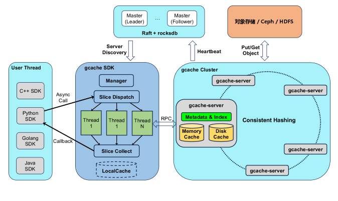
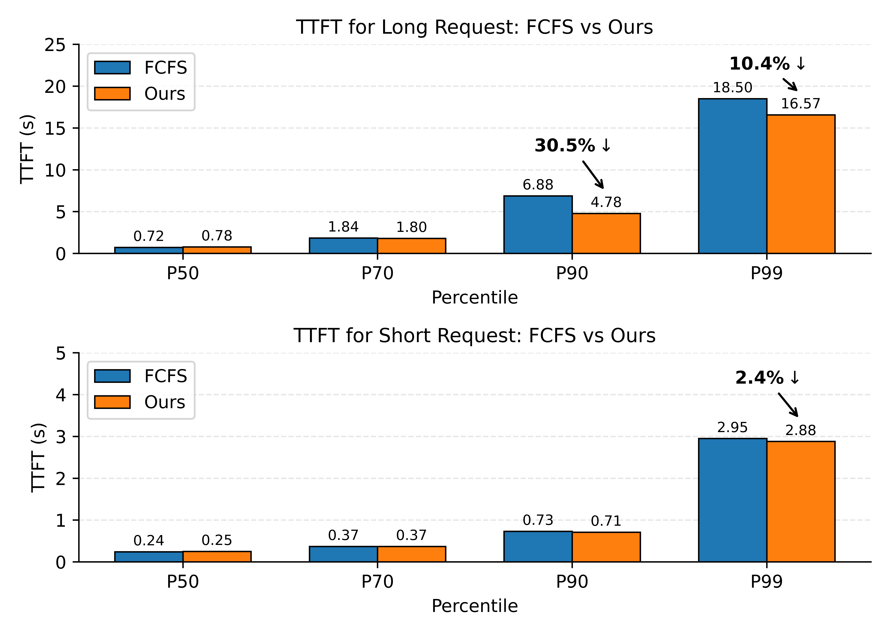
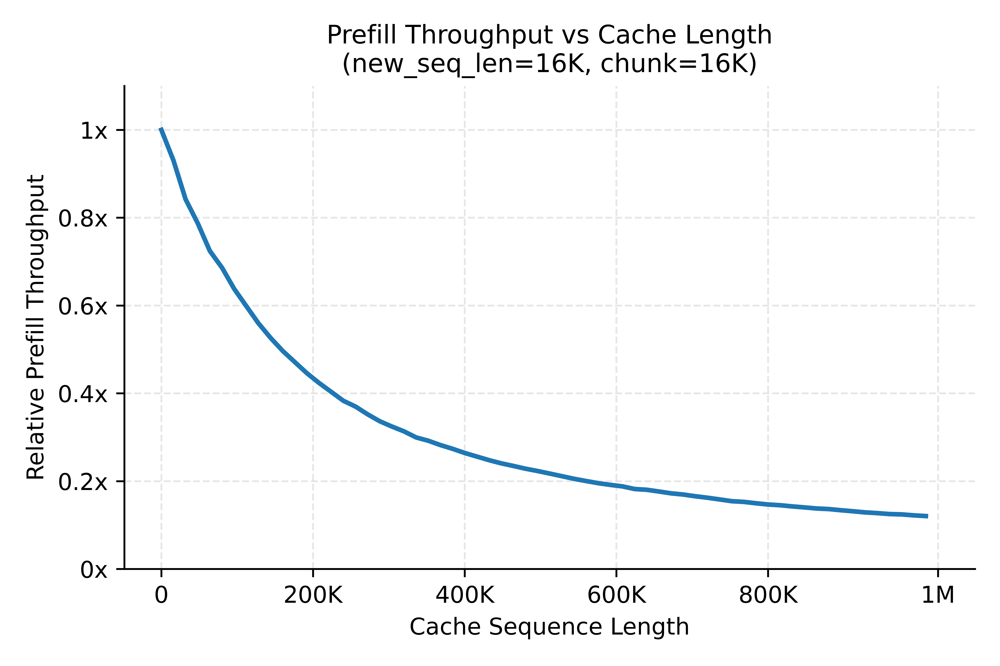
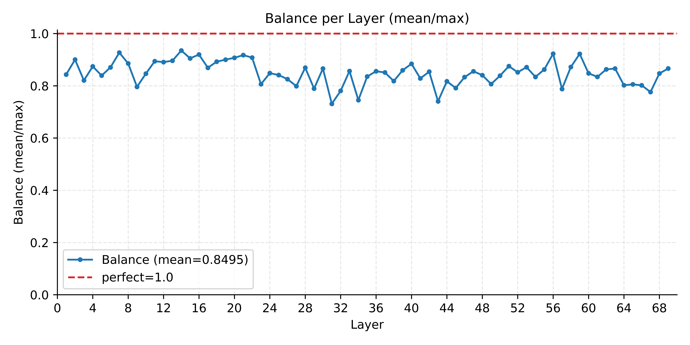

MiMo-V2.5系列（含MiMo-V2.5与MiMo-V2.5-Pro）融合了三种架构选择：Hybrid SWA把KVCache存储压到全注意力的约1/7；稀疏MoE在保持容量的同时削减每token计算；多模态编码器实现视觉、音频、视频跨模态理解。这些特性让它在长上下文与多模态场景潜力巨大。
但强推理需要建模长程依赖，而传统全注意力下计算量与KVCache都随上下文长度快速膨胀。Hybrid SWA的做法是让大多数层只在局部窗口内计算注意力，少数关键层保留全局视野，理论上把注意力复杂度降到近线性。
然而理论优势不会自动转化为生产效率。Hybrid SWA在命中率管理、前缀匹配、双语义一致性上引入新复杂度；真实系统还面临多级存储搬运、异步预取与调度错位、分布式缓存状态难同步等挑战。本文给出MiMo-V2.5推理系统的端到端工程实践，系统性兑现这套架构的理论潜力。

以MiMo-V2.5-Pro为例：共70层，其中10个全注意力层、60个SWA层，滑动窗口大小128。SWA层占全部层数的6/7，因此Hybrid SWA总计算量约为全注意力的1/7；在分块Prefill这种计算受限场景下，这直接等比转化为prefill成本下降。
由于SWA层只需在窗口内保留KV，KVCache内存同样降到约1/7。解码阶段主要受内存带宽约束，其延迟与读取参数和KVCache的总字节数成正比，长序列下KVCache体量远超参数，因此存储削减几乎直接转化为解码成本下降。
图2在两个参数量级组内对比代表性模型。在各自组内，MiMo-V2.5与MiMo-V2.5-Pro的预估KV缓存需求均为第二低，仅分别高于DeepSeek-V4-Flash和DeepSeek-V4-Pro。实际成本差异并非严格对应KVCache比例（有与序列长度无关的固定开销），但长上下文下整体趋势成立：序列越长，推理成本优势越大。



MiMo系列是最早采用Hybrid SWA的模型之一，但当初主流开源框架与缓存系统都没有完整SWA支持。上线MiMo API时选定SGLang v0.5.5，立刻遭遇挑战：彼时HiCache不支持SWA，早期SWA支持是靠存完整KVCache维持兼容的。团队决定自建一套性能上限更高、可用性更好的KVCache系统。
Hybrid SWA带来根本存储冲突：全注意力层要存整条序列KV（O(N)），SWA层只需窗口内KV（O(W)）。传统单一KV池被迫按O(N) 给所有层分配显存，使窗口稀疏性无法利用，实质退化成近乎全量KVCache。
解法是把KVCache拆成全注意力池与SWA池两个独立池：物理层上SWA池只按窗口大小分配并支持独立淘汰，严格约束在O(W)，该机制同样延伸到L2/L3；逻辑层向上暴露单一序列视图，以全注意力索引为权威、维护Full→SWA映射实现透明分级存储；调度时同时校验两类容量约束，跨层搬运仅依据SWA mask。
通过这一设计，SWA KVCache在系统层面实现严格O(W) 约束，整体容量效率提升约7倍，释放了Hybrid SWA的结构性优势。
存储优化就位后，SWA层只需预取极少量KVCache。通过分层调度，Host-to-Device的KVCache预取与计算近乎完美重叠，推理期间缓存读取成本降到接近零。

传统RadixAttention的命中规则建立在「token序列相等 → KV相等」上，这在全注意力下成立。但SWA下前缀树的逻辑生命周期与SWA KV的物理生命周期错位：节点长度不受窗口约束，可能只剩尾部片段甚至被整体淘汰。若仍按旧规则给长度，调度器会收到带已淘汰尾部KV的伪命中，后续注意力读到无效槽位，直接损害正确性。
为此前缀树语义做三处修订：(1) 匹配升级为「窗口安全长度」，除token相等外，尾部W个token在SWA池仍须有有效槽位，超出部分视为未命中；(2) 淘汰绑定请求生命周期，长任务中SWA池用量恒定在W或chunk量级，而非随序列增长；(3) 节点携带双索引（全注意力段索引 + SWA段映射），窗口外SWA段可独立淘汰而保留全注意力段。
引入「窗口安全长度」后，给定token容量下的原始命中率略降，但同等存储预算能容纳的token数成倍增长，以固定预算衡量的有效命中率反而大幅提升。

三层HiCache重构为SWA感知后，device/host/存储后端各自维护「哪些位置有有效SWA」的状态，但数据搬运异步、各部署缓存不同、跨会话前缀长度不一，极易失同步。若序列在Full Attention Cache命中却在SWA Cache未命中，会出现严重匹配长度截断，重算量变大、优化效果变差。
团队针对性处理了几类场景：「Device完整、Host不足」时主动查占用差值、异步D2H写回补充槽位；「高频序列L3前缀淘汰」时周期性查询L3以防被过早驱逐；中短序列则在固定位置保留较密集SWA KV，直接利好多用户共享系统提示词。最终把容量扩张转化为更长的有效命中长度，使跨会话长前缀复用成为可能。
GCache是小米存储团队自研的高性能通用缓存系统，也是统一训练-推理存储架构的关键部分。随着MiMo大模型发布与推理上线，它被改造为独立存储产品，用于模型分发并充当推理引擎的L3 KVCache。它同时支持文件/KV语义、跨内存/磁盘/远程的多级缓存、共享内存持久化与全路径零拷贝、高并发非阻塞IO与RDMA通信。

架构：对key做一致性哈希决定存储位置，Master仅管心跳与服务发现、IO路径不经过它，集群可无限扩展；冷数据落盘、热数据提升，缓存持久化到共享内存，服务重启不丢、扩缩容不丢。
网络：当前GPU机器配8×400G网卡，但现有推理框架仍难打满带宽。GCache优先用GPU网卡并做NUMA绑定、同轨亲和等优化；1MB IO下RDMA读取达170 GB/s@280μs，GDR场景因HBM带宽更高约350 GB/s，完全满足通信需求。
成本：与其他厂商用专用存储机不同，GCache优先与GPU机器共部署，接管Prefill/Decode节点的一部分内存与内置NVMe SSD，实现零额外存储成本。
可靠性：共部署下GPU机器高故障率（几乎每天有宿主机故障）。团队加固故障处理逻辑、用一致性哈希把相关会话分散到不同节点缩小爆炸半径、借助底层硬件检测主动发现故障并自动迁移；偶发崩溃则靠较短SDK超时让推理框架及时重算。由此GCache在共部署下维持单副本存储即保障可用性，正是其成本低的关键。
KVCache淘汰根本源于容量约束：容量近饱和时系统优先保留新请求、用类LRU驱逐旧条目，导致某上下文数小时后复用时常常未命中。SWA极小足迹让同等成本容纳数倍并发缓存，大容量L3进一步以低成本扩张容量，可用空间越多，淘汰压力越小、保留越久。
更长的TTL拓宽历史上下文命中窗口，命中率随之上升；SWA降低的带宽开销虽不直接影响TTL，却显著削减跨层搬运成本。自上线以来服务端持续观察到：主流高质量harness框架下，服务端KV Cache命中率平均93%；重度用户更高，达95% 以上。
早期SGLang社区路由器不成熟、实例间无共享状态，一旦故障或路由切换，KVCache调度就退化。小米据此开发LLM-Router：以Redis为集中存储、可动态扩缩容的无状态调度器，消除单服务故障后的KVCache退化，持续保障命中率。
KVCache亲和调度：路由器在Radix前缀树中维护已分发请求，多Prefill实例间优先选已缓存当前前缀的节点、同时均衡负载避免热点。部署后L2命中率提升约25%、单节点输入吞吐提升约30%。
TTFT优化：排队时传统FCFS不顾命中率高低，高命中率低计算量的请求会被低命中率请求拖住，导致TTFT P99异常拉长。路由器从等待队列优先选未缓存token更少的请求，并加等待时间惩罚机制防饿死。如图6，该策略不降低短请求质量，同时把长请求TTFT P90最多降低30%。

并行配置：理论上更小EP带来更优吞吐（跨机footprint小、DP间注意力不均衡轻、单机专家多MoE更均衡），但EP受显存约束。此前SWA KVCache须为所有token存KV，迫使EP更大；优化后只需存窗口内token，EP降到原来一半，端到端性能提升约40%。
长度分桶：MiMo-V2.5混合并行比纯GQA计算效率更高，但吞吐仍随序列变长明显退化。长短请求混跑会在两类场景拖慢短请求，DP-Attention同步被最长请求拖住、分块Prefill内长短前缀相互干扰。团队采用三级长度分桶（0–64K / 64K–256K / 256K–1M），把负载特征相近的请求聚桶计算，显著提升生产平均prefill吞吐。
MoE负载均衡：预训练已引入负载均衡目标，推理时不启用任何均衡策略，每层平均专家负载因子已约0.85，分布相当均衡，故当前不引入额外策略，持续监控按需迭代。
NUMA冲突：某些Ubuntu的numa_balancing内核参数与SGLang的numa-node配置冲突，导致推理kernel间随机出现大执行间隙、每次rank间同步被最慢rank拖住。关闭该参数后端到端性能提升约10%。

agent场景多轮对话使上下文持续增长，KVCache显存占用成为解码主要瓶颈：内存被填满后batch无法扩大、计算单元不饱和、吞吐受限，需更多节点维持，推高成本。团队做了三项内存优化：(1) 解码KVCache SWA支持，有效容量提升到约5倍；(2) PD分离下把KVCache预分配从GPU内存移到CPU，仅实际解码时才搬上GPU，消除过度分配浪费；(3) CUDA Graph内存调优减少浪费、增加容量。
MiMo-V2.5原生支持3层MTP加速解码，但此前prefill未启用MTP，导致前128个解码token在MTP层KVCache无效、接受率很低；而agent多为短输出，严重制约MTP加速。通过在prefill引入MTP支持并对HiCache L2/L3专门适配，早期解码加速大幅提升：0–128 token加速2.3倍、128–256 token加速1.5倍。
基于SGLang v0.5.7的EPD设计，团队对MiMo-V2.5的EPD分离做了一系列工程优化与稳定性修复，零延迟回退下把Encoder吞吐翻倍，并向上游SGLang回馈（issue #24945）。
架构：多模态embedding传输与prefill推理重叠；Encoder模型小，以TP=1 + 数据并行简化单机8-GPU部署；跨请求批处理按模态聚合、单次前向再拆分返回，解决逐请求编码的GPU利用率低下。
预处理：大图预处理移植到GPU消除CPU瓶颈；多进程并行下载与解码避开GIL；消息队列解耦下载与推理、批次内重叠；并行视频解码把1小时视频的端到端Encoder延迟从156秒降到23秒。
缓存：多Encoder下用一致性哈希把同key请求路由到同一Encoder，多模态命中率提升30%；节点内借共享内存让多Encoder GPU共享多模态缓存数据。

回顾起来，MiMo-V2.5系列的推理效率并非来自单点突破，而是跨多个维度的协同优化。Hybrid SWA同时利好prefill与decode，但优化不足的KVCache实现反而会在两阶段都推高成本。
团队系统性重构了KVCache管理、分级缓存与前缀树，攻克SWA感知KVCache的核心挑战，并优化调度与PD流水线，所有改动都在生产验证，最终兑现Hybrid SWA的理论收益，让其在长上下文推理中释放「性能与效率兼得」的架构优势。
这是首个全面覆盖「Hybrid SWA + MoE + 多模态」复合架构的大规模工程实现。团队把成本节约通过API降价返还用户，并将部分优化以PR贡献给SGLang社区，目标是降低工程优化门槛，让这类高效率复合架构被更广泛探索与采用。
参考：https://arxiv.org/html/2607.13095v1